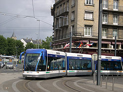

|  | Трамвай на шинах |
| Привод | электромотор или двигатель внутреннего сгорания |
| Период | с 1994 года |
| Скорость | 50-70 км/ч |
| Область применения | общественный транспорт в пределах города |
| Инфраструктура | выделенная полоса движения с направляющим рельсом |
Как следует из названия, трамвай на шинах, в отличие от традиционного трамвая, не нуждается в классическом рельсовом пути, однако является направляемым видом транспорта. Для этого используется проложенный в середине предназначенной трамваю полосы направляющий рельс, сходный с точки зрения городской среды с обычным трамвайным, или оптическая система. Некоторые специалисты в области транспорта отказывают оптически-направляемым системам в праве называться «трамваем на шинах»; производители указывают, что такие системы отличаются от шпурбуса тем, что при сохранении преимуществ направляемого движения так же хорошо вписываются в городскую среду, как и рельсовые системы или трамвай.
На практике конкурируют две несовместимые системы: с направляющим рельсом компаний «Бомбардье» (англ. GLT, Guided Light Transit, Направляемый лёгкий транспорт) и «Транслор» и оптическая система компании «Ирисбус» («Сивис» для автобусов и «Кристалис» для троллейбусов).
Система «Бомбардье» допускает движение в ненаправляемом режиме. Последняя возможность используется в Нанси, где на окраине города, а также в депо, вагоны движутся как обычный троллейбус, и лишь въезжая в стеснённый центр города, переходят в направляемый режим. Рельсовая система «Транслор» требует наличия направляющего рельса по всей сети.
Двигатель трамвая на шинах обычно электрический, но иногда и дизельный. При электрической тяге питание поступает от контактной сети, двухпроводной, как у троллейбуса (например, в Нанси), либо однопроводной, как у трамвая (например, в Кане); у этой сети вторым проводом служит направляющий рельс.
Концепция трамвая на шинах была широко разрекламирована разработчиками. Утверждалось, что трамвай на шинах сохраняет все преимущества традиционного трамвая (экологичность, высокая провозная способность), но лишён его недостатков (прокладка выделенной полосы трамвая на шинах стоит дешевле строительства трамвайной линии такой же длины). Однако «детские болезни» нового вида транспорта пока не преодолены.
Проблемы в работе оптической направляющей системы вынудили отказаться от неё города Клермон-Ферран и Руан.
Вскоре после пуска в эксплуатацию первой коммерческой линии трамвая на шинах с рельсовой направляющей имели место несколько случаев «схода с рельсов» (при этом даже были пострадавшие), система в течение нескольких месяцев не функционировала в связи с проводившейся доработкой, даже после завершения которой ее работа вызывает нарекания.
В настоящее время «трамвай на шинах» работает в двух французских городах: Нанси (с 2000 года) и Кане (с 2002 года). В Нанси транспортные средства питаются от двухпроводной контактной сети, аналогичной троллейбусной, в Кане — от однопроводной (через пантограф), роль второго провода играет направляющий рельс.